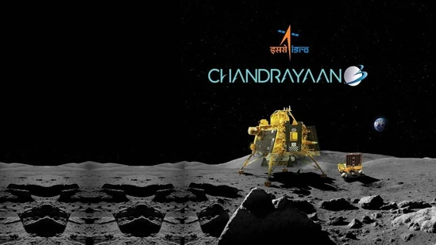
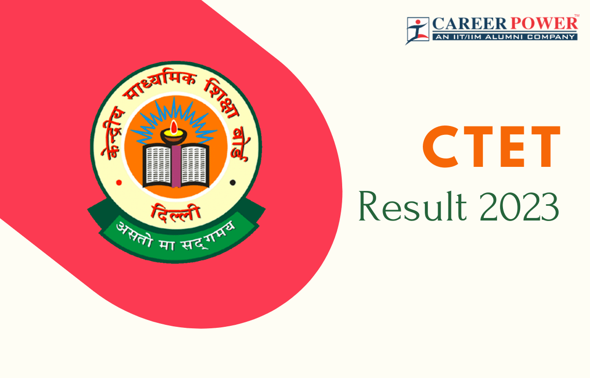
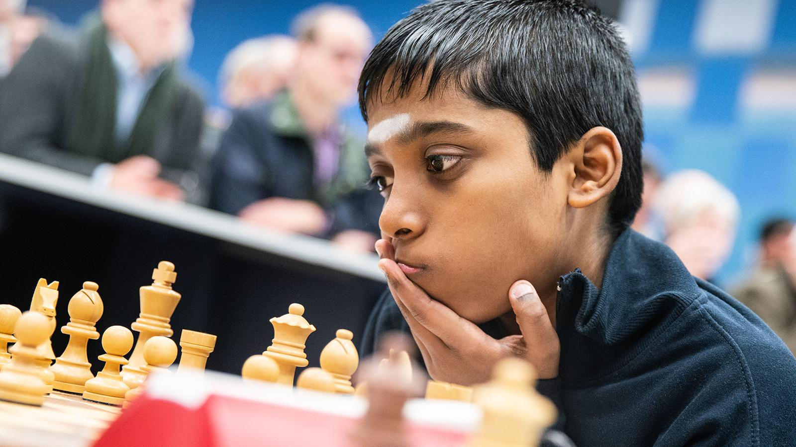

Chandrayaan-3's Vikram Lander establishes communication with Chandrayaan-2 orbiter, says ISRO

Chandrayaan-3 is preparing for its soft landing on the Moon surface on Wednesday.
Chandrayaan-3's Lander Module established communication with the orbiter of the already present Chandrayaan-2 orbiter around the Moon, as it embarks on the historic “soft-landing” on the lunar surface, the Indian Space Research Organisation (ISRO) said. Chandrayaan-2 is the previous edition of India's lunar mission which was launched in 2019, whose lander however lost the communication even after the successful orbit and de-orbit manoeuvers towards the Moon.
CTET Result: Marks sheets to be out on DigiLocker, know how to get login details

CTET 2023: The DigiLocker platform can be accessed both through website (digilocker.gov.in) and the app which is available for both Android and iOS devices.
Central Board of Secondary Education (CBSE) on Sunday informed that as a part of its commitment towards the green revolution and for benefit of candidates, marks sheets and eligibility certificates of the Central Teacher Eligibility Test (CTET) 2023 will be issued through DigiLocker.
Chess World Cup 2023: India's Praggnanandhaa defeats Fabiano Caruana in tiebreaks, sets up final with Magnus Carlsen

Indian grandmaster R. Praggnanandhaa registered a memorable win over USA’s Fabiano Caruana in tiebreaks in the semi-final.
Setting up a blockbuster clash with World No. 1 Magnus Carlsen in the FIDE World Cup on Monday, Indian grandmaster R. Praggnanandhaa registered a memorable win over USA’s Fabiano Caruana in tiebreaks in the semi-final. Praggnanandhaa outclassed Caruana by winning the semi-final 3.5-2.5 in Baku, Azerbaijan. Praggnanandhaa has also sealed his spot in the Candidates 2024.
Praggnanandhaa registered a memorable win over USA’s Fabiano Caruana in tiebreak(Twitter)